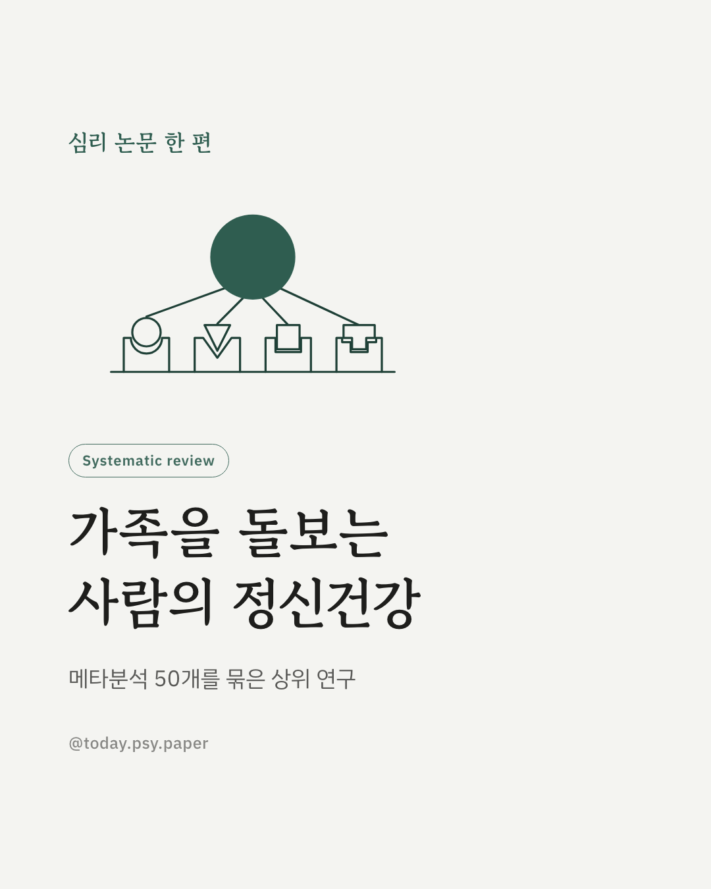
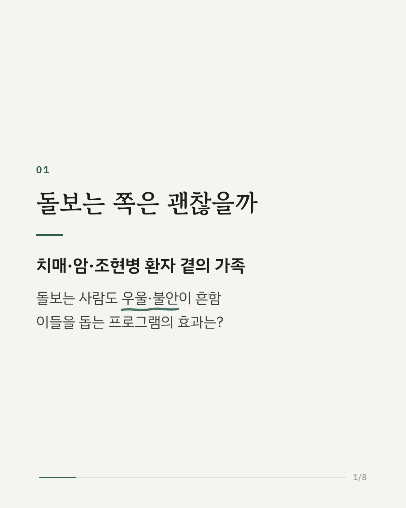
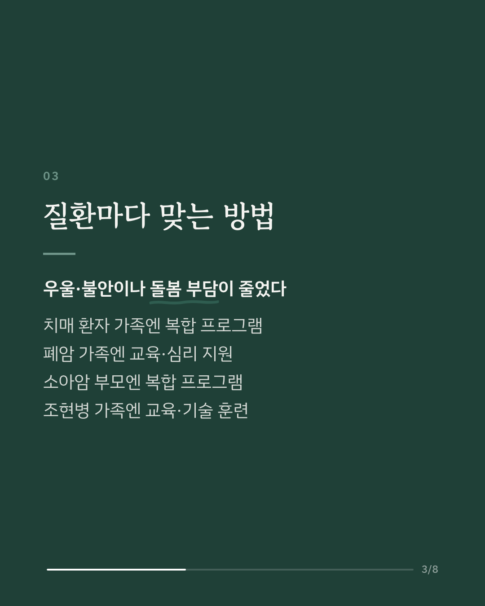
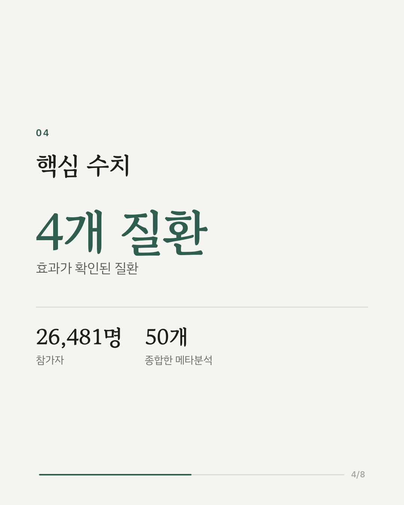
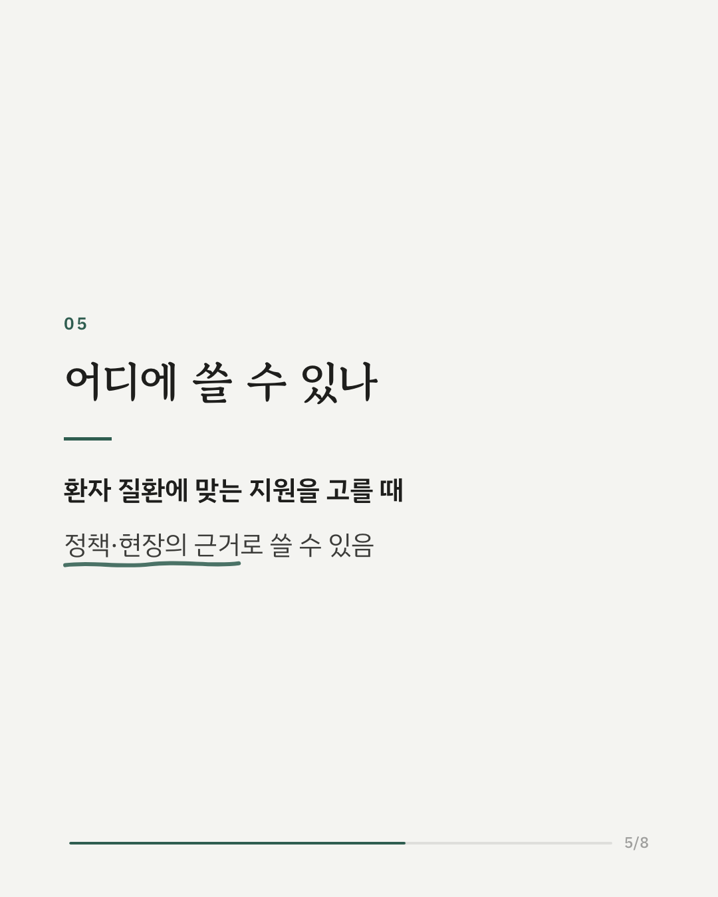
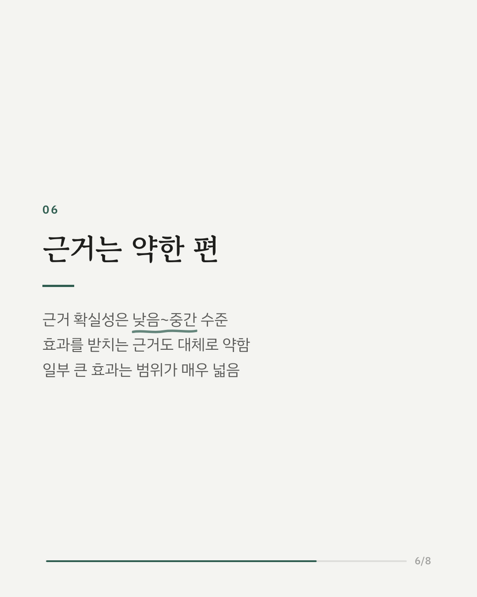
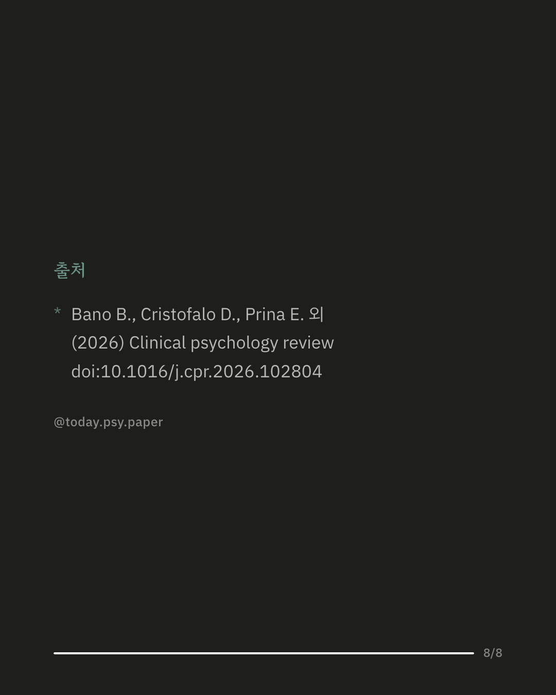

치매, 암, 조현병 환자를 곁에서 돌보는 가족은 우울과 불안을 겪기 쉽습니다. 이 연구는 돌보는 가족의 정신건강을 위한 지원 프로그램이 실제로 효과가 있었는지, 기존 체계적 문헌고찰 19편과 그 안의 메타분석 50개(참가자 26,481명)를 다시 묶어 살폈습니다. 효과는 환자의 질환에 따라 달랐습니다. 치매 환자 가족에게는 여러 요소를 합친 복합 프로그램이 우울·불안과 돌봄 부담을 줄였습니다. 폐암 환자 가족은 교육과 심리 지원으로, 소아암 환자의 부모는 복합 프로그램으로 우울과 불안이 줄었습니다. 조현병 등 정신증 환자 가족은 교육과 대처 기술 훈련 뒤 돌봄 부담이 줄었습니다. 연구진은 이 결과가 질환별로 어떤 지원을 제공할지 정하는 정책과 현장에 참고가 될 수 있다고 봤습니다. 다만 근거의 확실성은 낮음에서 중간 수준이었고, 효과를 뒷받침하는 근거의 강도도 전반적으로 약했습니다. 출처: Clinical Psychology Review (2026), 'Effectiveness of psychosocial interventions addressing informal caregivers' mental health: an umbrella systematic review with 26,481 participants' DOI: 10.1016/j.cpr.2026.102804 #임상심리 #정신건강정보 #심리학연구 #논문리뷰 #가족돌봄 #간병 #치매가족 #돌봄부담
python3 publish.py 42863359